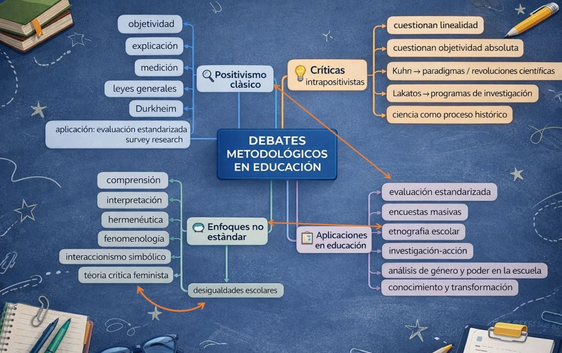

Presentación del trabajo
Este trabajo práctico aborda un problema educativo actual: el uso del celular dentro del aula. A partir de este tema, se desarrollan tres actividades orientadas a pensar diferentes enfoques metodológicos, los debates epistemológicos en educación y las críticas clásicas al método en relación con la práctica docente.
Actividad 1: Tres miradas a un mismo problema educativo
En esta actividad se trabaja sobre un mismo problema educativo desde tres enfoques metodológicos distintos. El problema elegido es: efectos de la restricción del uso del celular sobre la atención y la participación en clase.
Delimitación pedagógica del problema
El problema se sitúa en el campo educativo y pedagógico porque no interesa solamente saber si el celular “molesta” o “distrae”, sino comprender cómo su restricción impacta en los procesos de atención, participación e implicación del alumno en la clase. El foco está puesto en el estudiante como sujeto pedagógico: cómo se posiciona frente a la propuesta de enseñanza, cómo participa, cómo sostiene la atención y cómo se vincula con la tarea escolar.
Desde esta perspectiva, el problema no se reduce al dispositivo en sí, sino a su incidencia en la experiencia de aprendizaje dentro del aula.
1. Aproximación experimental
Cómo se investigaría este problema
Desde la aproximación experimental, el objetivo sería analizar si la restricción del uso del celular produce cambios observables en la atención y la participación de los alumnos durante la clase. Esta mirada se apoya en la lógica de control de variables y relación causa-efecto, vinculada con la aproximación experimental de tipo galileana.
El diseño podría organizarse del siguiente modo:
- se seleccionan dos grupos de alumnos de características semejantes;
- en uno de los grupos se implementa una consigna de restricción del uso del celular durante un período breve de clases;
- en el otro grupo se mantiene la dinámica habitual;
- luego se comparan los comportamientos de los estudiantes.
Aspectos a observar
- la atención sostenida;
- la participación oral;
- la realización de tareas;
- la concentración en actividades propuestas por el docente.
Objeto de estudio
El objeto no es el celular en sí mismo, sino los efectos pedagógicos de su restricción sobre la atención y la participación del alumno.
Variables
- Variable independiente: restricción del uso del celular.
- Variables dependientes: atención en clase, participación e involucramiento en la tarea.
Técnicas posibles
- observación sistemática de clases;
- grillas de registro de participación;
- comparación de tareas realizadas;
- notas del docente sobre interrupciones, dispersión y respuesta de los alumnos.
Ventajas
Este enfoque permite observar de forma más precisa si una decisión pedagógica concreta produce ciertos efectos. Ayuda a organizar la observación y a focalizar en cambios visibles en la conducta escolar del alumno.
Desventajas y límites
Su mayor límite es la artificialidad, porque el aula no puede controlarse como un laboratorio. Además, la atención y la participación dependen de múltiples factores: interés por el contenido, vínculo con el docente, clima grupal, cansancio y motivación. Por eso, aunque se busque una relación causa-efecto, en educación nunca puede afirmarse de forma completamente cerrada.
2. Método de la asociación
Cómo se investigaría este problema
Desde el método de la asociación, no se intenta intervenir directamente para producir un efecto, sino observar si existe una relación entre la restricción del uso del celular y ciertos comportamientos escolares de los alumnos. Esta perspectiva trabaja con variables y con la posibilidad de encontrar regularidades entre propiedades, en línea con lo que el capítulo 1 llama matriz de datos y supuesto atomista.
Se podría trabajar con varios alumnos o cursos y registrar:
- frecuencia de uso del celular en clase;
- grado de restricción del uso del celular;
- niveles de participación;
- tiempos de atención;
- cantidad de tareas terminadas;
- intervenciones en clase.
La pregunta central no sería tanto “qué efecto causa” la restricción, sino: ¿existe asociación entre mayor restricción del celular y mayores niveles de atención y participación del alumno?
Objeto de estudio
El objeto de estudio es la relación entre el grado de restricción del uso del celular y las formas de atención y participación de los alumnos.
Cómo se aplicaría pedagógicamente
Podrían compararse:
- alumnos en clases con uso restringido;
- alumnos en clases con uso flexible;
- distintos momentos de una misma clase según el nivel de control del celular.
El interés estaría en construir datos que permitan ver tendencias:
- si cuando hay mayor restricción aumenta la participación;
- si cuando el uso es libre crecen las distracciones;
- si ciertos estudiantes se benefician más que otros.
Técnicas posibles
- encuestas breves;
- observación estructurada;
- cuadros comparativos;
- análisis de registros de clase;
- escalas de participación y atención.
Ventajas
Tiene mayor viabilidad en la escuela real, porque no exige un control total de la situación. Permite trabajar con varios alumnos y encontrar tendencias generales.
Desventajas y límites
No permite afirmar causalidad de manera estricta. Que dos fenómenos estén asociados no significa necesariamente que uno cause al otro. Además, al trabajar con variables separadas, puede dejar de lado la riqueza del contexto y la singularidad de la experiencia de los alumnos.
3. Enfoque no estándar
Cómo se investigaría este problema
Desde el enfoque no estándar, la preocupación no estaría centrada en medir o controlar variables, sino en comprender cómo viven los alumnos la restricción del uso del celular y qué efectos pedagógicos produce en su experiencia de clase. Este enfoque se entiende como contextual, idiográfico y orientado a la comprensión global.
Preguntas posibles
- ¿Cómo interpretan los alumnos la prohibición o restricción del celular?
- ¿La viven como ayuda, control, castigo o acompañamiento?
- ¿Qué cambia en su forma de participar?
- ¿Cómo se modifica su vínculo con la clase cuando no tienen el celular a disposición?
Este enfoque permite mirar al alumno no solo como portador de conductas observables, sino como sujeto que otorga sentido a lo que ocurre en el aula.
Objeto de estudio
El objeto de estudio es la experiencia escolar del alumno frente a la restricción del uso del celular, en relación con su atención, participación y vínculo con la propuesta pedagógica.
Cómo se aplicaría pedagógicamente
Se podría elegir un curso y trabajar en profundidad con:
- observación participante;
- entrevistas a alumnos;
- conversaciones grupales;
- registro de escenas significativas;
- entrevistas al docente sobre cambios percibidos en la dinámica del aula.
Interesa comprender:
- si la restricción mejora la concentración;
- si genera resistencia;
- si algunos alumnos participan más;
- si otros se sienten más desmotivados;
- cómo esas reacciones se relacionan con la propuesta de enseñanza.
Técnicas posibles
- entrevistas abiertas;
- observación participante;
- notas de campo;
- relatos de experiencia;
- análisis interpretativo de situaciones áulicas.
Ventajas
Aporta más profundidad y más riqueza pedagógica. Permite comprender la experiencia de los alumnos en contexto y recuperar sus voces. Es especialmente valioso si lo que se busca es entender el fenómeno más allá de los datos visibles.
Desventajas y límites
Tiene menos alcance para generalizar. Además, exige más tiempo, más interpretación y un trabajo de campo más fino. Sus resultados son más situados y menos extrapolables.
Cuadro comparativo corregido
| Enfoque | Cómo aborda el problema | Objeto centrado en el alumno | Ventajas | Desventajas / límites |
|---|---|---|---|---|
| Aproximación experimental | Busca ver si la restricción del celular produce cambios en atención y participación. | El alumno es observado en sus respuestas ante una condición pedagógica modificada. | Permite ver efectos concretos y ordenar la observación. | Artificialidad, escaso control real del aula y simplificación. |
| Método de la asociación | Busca relaciones entre restricción del celular y conductas escolares. | El alumno aparece como unidad de análisis a partir de variables observables. | Permite trabajar con varios casos y hallar tendencias. | No demuestra causalidad y puede perder contexto. |
| Enfoque no estándar | Busca comprender cómo viven los alumnos la restricción y cómo impacta en su experiencia escolar. | El alumno es sujeto de sentido y experiencia pedagógica. | Profundidad, comprensión contextual y riqueza interpretativa. | Menor generalización, más tiempo y análisis. |
Reflexión: ¿qué enfoque sería más adecuado?
Si pensamos este problema desde una perspectiva pedagógica y con foco en el alumno, el enfoque que parece más adecuado es el no estándar, porque permite comprender no solo si la restricción del celular modifica la atención y la participación, sino también cómo y por qué lo hace en la experiencia concreta de los estudiantes. En educación, muchas veces no alcanza con registrar conductas; también es necesario interpretar sentidos, vínculos y modos de habitar la clase.
Sin embargo, los tres enfoques pueden aportar algo distinto: el experimental ayuda a observar efectos puntuales; el de la asociación permite encontrar tendencias; y el no estándar ofrece comprensión profunda del fenómeno en contexto. Por eso, como futuras docentes, podríamos sostener que el enfoque no estándar es el más pertinente para comprender pedagógicamente el problema, aunque complementarlo con elementos de asociación podría enriquecer la investigación.
Actividad 2: Mapa de los debates en educación
El capítulo 2 de Marradi, Archenti y Piovani muestra que en las ciencias sociales no existe una única manera de producir conocimiento, sino que se fueron configurando debates metodológicos entre distintas perspectivas. En educación, esos debates influyen directamente en cómo se investiga la escuela, cómo se evalúa, cómo se interpreta la experiencia de los sujetos y qué se considera conocimiento válido.
Idea central del mapa
Debates metodológicos en educación
Ejes principales
- Positivismo clásico
- Críticas intrapositivistas
- Enfoques no estándar
- Aplicaciones en educación
Positivismo clásico
Parte de la idea de que la realidad social puede estudiarse con criterios semejantes a los de las ciencias naturales. Busca un conocimiento objetivo, generalizable, basado en observación, medición y regularidades. Durkheim aparece como autor clave, defendiendo el estudio de los hechos sociales como cosas.
Críticas intrapositivistas
Thomas Kuhn
Cuestiona la idea de que la ciencia avance linealmente y propone la noción de paradigma. Esto permite pensar que en educación tampoco hay un único modelo válido para siempre.
Imre Lakatos
Propone la idea de programas de investigación con un núcleo duro y hipótesis auxiliares, mostrando que las teorías no se abandonan automáticamente ante una sola refutación.
Enfoques no estándar
- Hermenéutica: interpretación de sentidos.
- Fenomenología: experiencia vivida de los sujetos.
- Interaccionismo simbólico: construcción social en la interacción cotidiana.
- Teoría crítica feminista: cuestionamiento a la supuesta neutralidad del conocimiento.
Aplicaciones concretas en educación
- Survey research: evaluaciones masivas y medición de variables.
- Etnografía escolar: observación participante y comprensión del contexto.
- Investigación-acción: reflexión y transformación de la práctica docente.

Los debates metodológicos en educación muestran que no existe una sola forma legítima de investigar la realidad escolar. Cada enfoque produce una manera diferente de entender la ciencia, el conocimiento y la práctica educativa.
Actividad 3: Críticas clásicas al método: ¿sirven para la educación?
Las críticas clásicas al método conservan plena vigencia cuando se las piensa en relación con la educación actual. Marradi, Archenti y Piovani cuestionan la idea de un método concebido como secuencia rígida, universal, lineal y aplicable de manera uniforme a toda investigación. En lugar de aceptar una imagen cerrada del método, muestran sus límites frente a la complejidad de los contextos sociales.
Rigidez
La idea de que existe un camino fijo y correcto para proceder recuerda ciertas prácticas pedagógicas donde la planificación o el diseño curricular se interpretan como secuencias cerradas. En esos casos, el riesgo es transformar la enseñanza en una aplicación burocrática, dejando poco lugar para la singularidad del grupo y los emergentes del aula.
Linealidad
En la visión clásica, el método aparece como una sucesión ordenada de pasos. Sin embargo, en la práctica educativa esto rara vez ocurre así. Los estudiantes vuelven sobre contenidos, interrumpen, resignifican, olvidan, preguntan y conectan con experiencias previas. Aprender no es avanzar por escalones idénticos, sino transitar recorridos heterogéneos.
Pretensión de universalidad
El método clásico supone que lo válido en un contexto puede trasladarse sin más a cualquier otro. En educación, esto se hace visible cuando se implementan propuestas generales sin atender diferencias territoriales, institucionales o socioculturales.
Método, metodología y técnica
Un docente no debería reducir la metodología a una simple elección de técnicas, ni identificar el método con una secuencia inflexible. Diseñar una clase implica articular propósitos, supuestos sobre el aprendizaje, condiciones institucionales, contenidos, recursos y estrategias.
La tensión entre método y metodología no se resuelve eligiendo uno contra otro, sino articulándolos de manera flexible: la metodología aporta el marco de sentido, el método organiza la acción y la experiencia concreta obliga a reajustar ambas dimensiones.
Conclusión
Las críticas clásicas al método siguen siendo útiles para pensar la educación actual. La rigidez, la linealidad y la pretensión de universalidad continúan apareciendo en muchas propuestas pedagógicas contemporáneas cuando se transforman en fórmulas cerradas o mandatos homogéneos. Frente a eso, la educación requiere una mirada metodológica más reflexiva, capaz de reconocer la complejidad de la práctica, la diversidad de los contextos y el carácter situado del conocimiento pedagógico.
Como futuros docentes, asumir estas críticas no implica renunciar al método, sino usarlo de forma más crítica, flexible y coherente con la realidad concreta del aula.